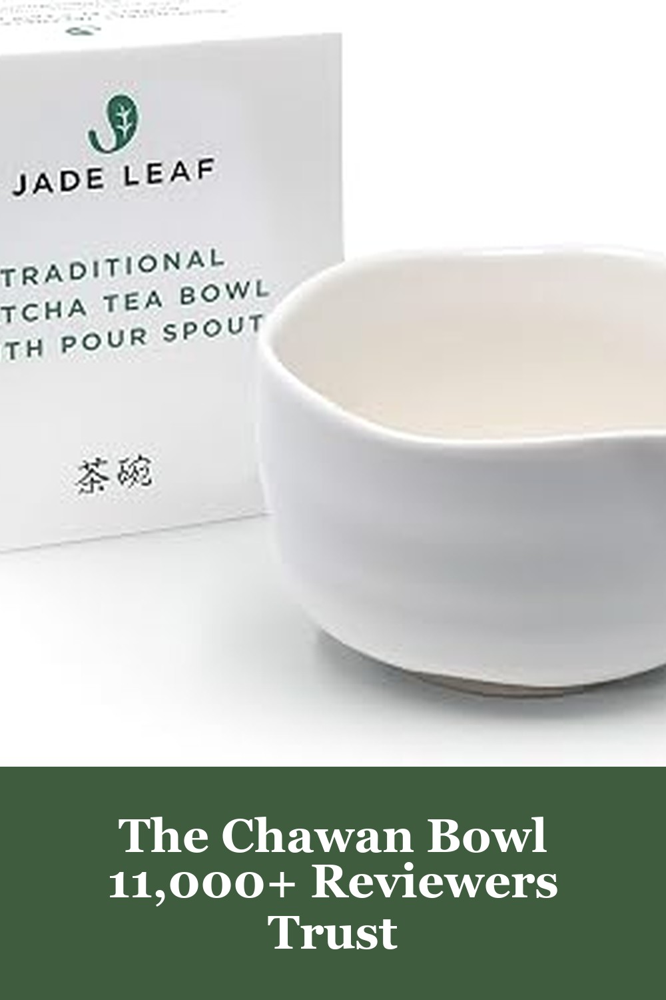
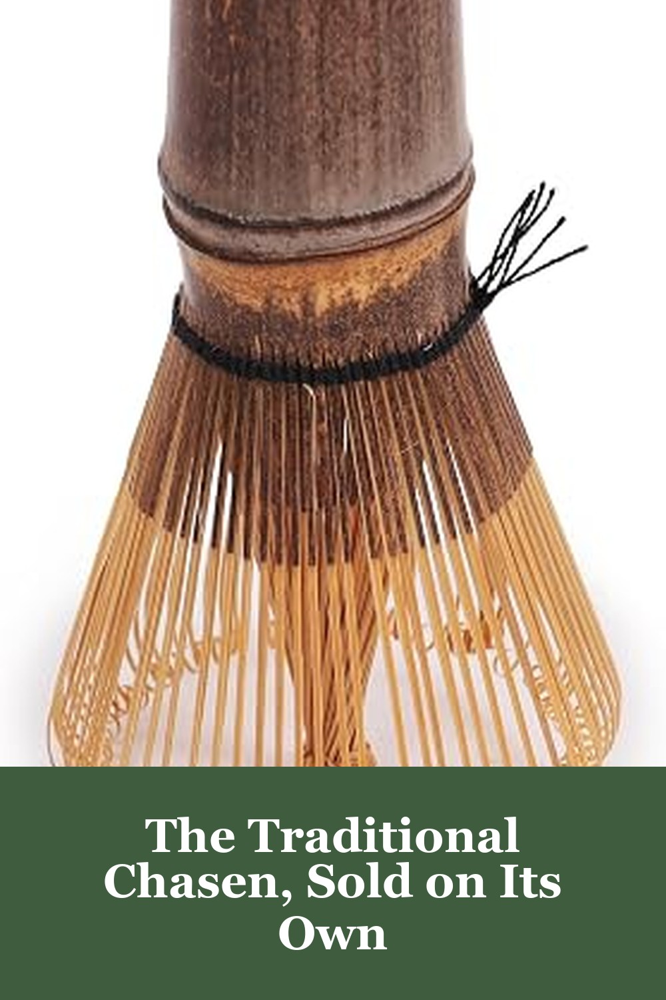
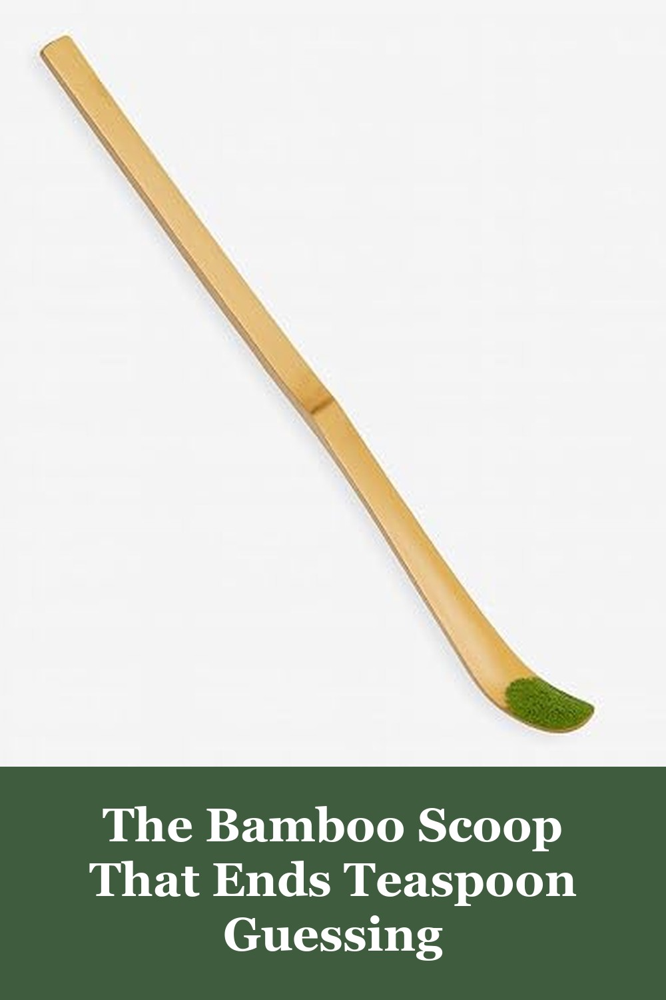

Jade Leaf Matcha Bowl, Hand Made Porcelain with White Matte Glaze
Every matcha ritual starts with the bowl — this hand-thrown porcelain chawan from Jade Leaf has a built-in pour spout so whisked matcha goes straight into your cup with zero drips. The wide base gives your chasen room to whisk without splashing, and the matte white glaze looks as good on a shelf as it does in daily use.
Reviewers who bought Jade Leaf's traditional matcha tools describe them as beautifully crafted and an easy way to bring an authentic tea-ceremony feel home — several say the bowl is the piece they reach for daily.— verified Amazon buyer
View on Amazon →
BambooMN Japanese Matcha Whisk Chasen - Traditional Handcurled Matcha Utensil - Black - 1 Piece
A proper chasen is the difference between clumpy matcha and a silky, café-style froth — this handcurled 100-prong bamboo whisk from BambooMN breaks down powder in seconds, hot or iced. No bowl, no scoop, just the traditional tool matcha purists reach for.
It makes a great froth and mixes the matcha perfectly for that authentic traditional taste — though a few reviewers note the bristles can fray with heavy daily use, so plan to replace it every so often.— verified Amazon buyer
View on Amazon →
JapanBargain 2202, 4-Pack Bamboo Matcha Scoops Chashaku Tea Powder Spoon
Eyeballing matcha with a teaspoon never gives you the same cup twice — this traditional bamboo chashaku scoop measures out a consistent dose every time, the way Japanese tea ceremonies have done it for centuries. Comes as a 4-pack, so you'll always have a spare.
It works just fine, feels good in the hand, and seems like the proper way to prepare matcha rather than eyeballing a teaspoon — reviewers do note the bamboo can be delicate, so handle it gently.— verified Amazon buyer
View on Amazon →